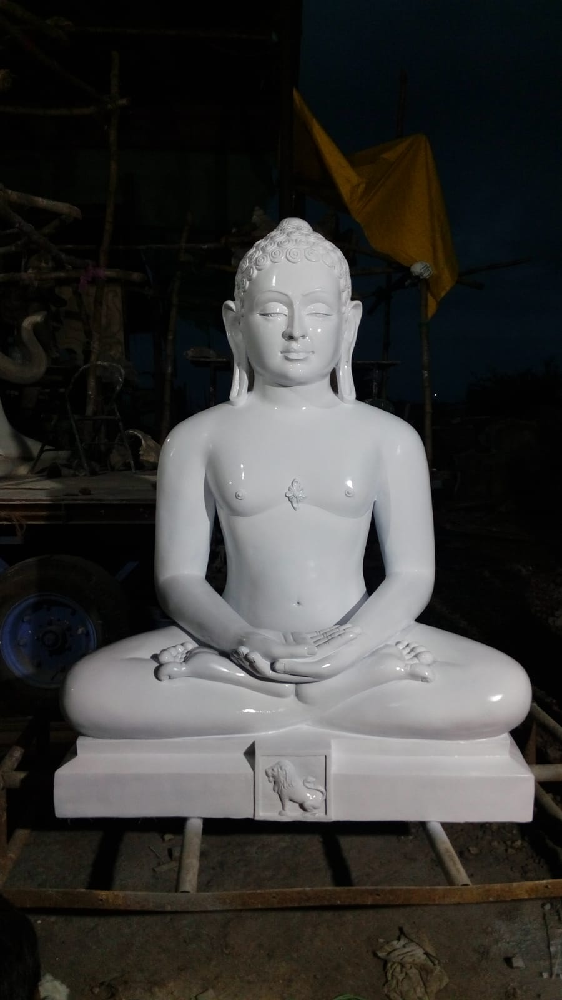
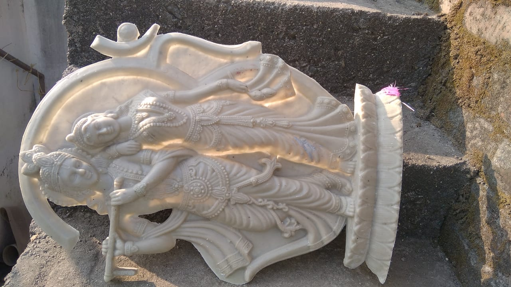

FRP Sculptural Creations
At Sifan Fibrotech, we create high-quality FRP Sculptural Creations that combine artistic design with the strength and durability of Fiber Reinforced Plastic. Our sculptures are designed to enhance the visual appeal of any space while maintaining long-lasting performance in different environments. Whether it is a decorative statue for a garden, a modern art installation for a commercial building, or a spiritual sculpture for temples and public places, our FRP creations are crafted to deliver both beauty and reliability.
FRP is an ideal material for sculptural work because it allows artists and designers to create detailed shapes, smooth finishes, and large structures without compromising strength. Compared to traditional materials like stone, metal, or concrete, FRP sculptures are lighter, easier to install, and highly resistant to weather and corrosion. This makes them perfect for both indoor and outdoor decorative applications.
Our FRP sculptural creations are carefully manufactured using advanced molding techniques and high-quality resins to ensure excellent finishing and durability. Each sculpture is designed with attention to detail so that it becomes a unique centerpiece wherever it is placed.
Key Features of Our FRP Sculptures
Our sculptural products are designed with both aesthetics and performance in mind. Some of the major features include:
- Lightweight Structure: FRP sculptures are much lighter than stone or metal sculptures, making them easier to transport and install.
- High Durability: The fiber reinforcement provides strong structural integrity, ensuring long-lasting performance.
- Weather Resistance: FRP materials are resistant to rain, sunlight, humidity, and environmental damage.
- Corrosion Free: Unlike metal sculptures, FRP does not rust or corrode over time.
- Smooth and Detailed Finish: Advanced molding techniques allow us to create highly detailed artistic designs.
- Low Maintenance: FRP sculptures require minimal maintenance and remain visually appealing for many years.
These features make FRP sculptures an excellent choice for architectural decoration, landscaping, and artistic installations.
Applications of FRP Sculptural Creations
Our sculptures are widely used in many decorative and architectural environments. Some common applications include:
- Garden and Landscape Decoration: Decorative statues and artistic structures for parks, gardens, and outdoor spaces.
- Religious and Spiritual Installations: Sculptures such as Buddha statues and other spiritual designs for temples and meditation spaces.
- Hotel and Resort Decoration: Unique artistic pieces that enhance the ambiance of luxury hospitality spaces.
- Event and Wedding Decoration: Eye-catching sculptures used as centerpieces or thematic décor elements.
- Commercial and Public Spaces: Large sculptural installations used in malls, offices, and public areas.
Because of their durability and attractive appearance, FRP sculptures are becoming increasingly popular in modern architectural and decorative projects.
Custom Sculptural Designs
At Sifan Fibrotech, we also offer custom FRP sculptural designs tailored to the specific needs of our clients. Our design team works closely with architects, designers, and project planners to create sculptures that perfectly match the theme and style of the space.
Customization options include:
- Different sizes and dimensions
- Unique artistic designs
- Custom colors and finishes
- Large decorative installations for outdoor environments
This flexibility allows us to produce sculptures that are not only visually impressive but also perfectly suited to their surroundings.


Quality Craftsmanship
Every FRP sculpture we create reflects our commitment to quality, creativity, and precision craftsmanship. From concept and design to manufacturing and finishing, each step is carefully managed to ensure the final product meets the highest standards.
Our goal is to deliver sculptural creations that not only serve as decorative elements but also become lasting symbols of art, creativity, and structural excellence. With their combination of beauty, strength, and weather resistance, our FRP sculptures provide an ideal solution for decorative projects that require both artistic expression and long-term durability.
Contact Us
Get In Touch
We are available for consultations and project quotes. Visit our facility or contact us directly.
Sifan Fibrotech,
Babaleshwar, Vijayapura, Karnataka 586113,
+91 9900645310 | +91 9623833304
sifanfibrotechbbl@gmail.com